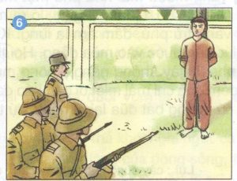

![]()
|
|
|
TẬP THỂ LỚP 8A SẢN PHẨM CUỘC THI SÁNG TẠO TRẺ |
Lý Tự Trọng tên thật là Lê Văn Trọng, sinh ngày 20 tháng 10 năm 1914. Quê quán ở xã Thạch Minh, huyện Thạch Hà, tỉnh Hà Tĩnh. Sinh ra tại làng Bản Mạy, tỉnh Nakhonphanom – Thái Lan trong một gia đình Việt kiều yêu nước có đông anh chị em.
Ông là một trong những nhà cách mạng trẻ tuổi nhất của Việt Nam. Khi được cử sang Trung Quốc học tập, anh được đồng chí Nguyễn Ái Quốc, lúc bấy giờ lấy bí danh là Lý Thụy dạy dỗ, dìu dắt, nên tự nguyện đổi tên thành Lý Tự Trọng. Lý Tự Trọng quê ở làng Kẻ Vẹt, huyện Thạch Hà, tỉnh Hà Tĩnh (nay là xã Xuyên Việt), nhưng anh được sinh ra ở Xiêm (Thái Lan).
Đến năm 12 tuổi, anh được đưa sang Quảng Châu học theo chủ trương của lãnh tụ Nguyễn Ái Quốc đưa những thiếu niên ưu tú sang đào tạo lâu dài ở hải ngoại, chuẩn bị nhân tài cứu nước. Với dáng người nhỏ bé, nhưng lại rất thông minh, nhanh nhẹn, anh đã học rất giỏi và là một trong những học trò xuất sắc của lớp đào tạo. Đồng thời, anh tích cực tham gia hoạt động trong tổ chức Việt Nam Thanh niên cách mạng đồng chí hội do Nguyễn Ái Quốc sáng lập.
Năm 1929, anh được cử về trong nước hoạt động để tăng cường lực lượng cho Hội ở trong nước. Nhanh nhẹn, giỏi ngoại ngữ, anh được giao nhiệm vụ làm liên lạc, phiên dịch viên… và có công rất lớn trong việc tuyên truyền, vận động giai cấp công nhân ở Nam Kỳ đứng lên đấu tranh. Anh cũng là một trong những người tích cực tuyên truyền, giác ngộ đảng viên để tiến tới hợp nhất 3 tổ chức Cộng sản ở trong nước và thành lập Đảng Cộng sản Việt Nam năm 1930. Đồng chí Trần Phú, Tổng Bí thư đầu tiên của Đảng đã chỉ định Lý Tự Trọng làm bí thư đầu tiên của Đoàn ở Nam Kỳ. Anh được giao nhiệm vụ vận động, tổ chức Đoàn Thanh niên Cộng sản trong các xí nghiệp và các trường học ở Sài Gòn – Chợ Lớn. Lúc này, anh mới 16 tuổi.
Trong cuộc diễn thuyết ngày 8-2-1931 tại sân vận động Larennie Sài Gòn để kỷ niệm 1 năm cuộc bạo động ở Yên Bái thất bại, Lý Tự Trọng đã bị thực dân Pháp bắt khi chính anh đã bắn chết tên cò Lơrăng. Bọn thực dân điên cuồng tra tấn anh với mọi loại hình dã man nhất, nhưng chúng không lấy được ở anh bất kỳ thông tin gì.
Mặt khác, chúng phải khiếp sợ trước tinh thần hiên ngang, bất khuất, ánh mắt rực lửa căm thù và lòng yêu nước mãnh liệt của người thiếu niên mới 17 tuổi. Mặc dù theo luật pháp, chúng không được dùng án tử hình đối với thiếu niên, nhưng chúng đã buộc phải giết anh để tránh hậu họa về sau. Cái chết cao cả, vô cùng anh dũng của Lý Tự Trọng đã tạo nên truyền thống đấu tranh bất khuất của lớp lớp thế hệ thanh niên Việt Nam.
Đêm 30/4/2011, hài cốt của liệt sĩ Lý Tự Trọng được chuyển từ TP.HCM về đến sân bay Vinh. Tại sân bay, các cấp, các ngành, thân nhân liệt sĩ Lý Tự Trọng cùng người dân Hà Tĩnh đã làm lễ truy điệu tiễn đưa hài cốt và di ảnh liệt sĩ từ sân bay Vinh về an táng tại huyện Thạch Hà, tỉnh Hà Tĩnh.
Cuộc đời của Lý Tự Trọng là tấm gương sáng về tinh thần yêu nước, ý chí kiên cường của tuổi trẻ Việt Nam. Ông đã hy sinh nhưng câu nói : “Con đường của thanh niên chỉ có thể là con đường cách mạng chứ không thể là con đường nào khác” mãi mãi ghi vào lịch sử đấu tranh cách mạng của dân tộc Việt Nam.
Qua câu chuyện về Lý Tự Trọng, chúng ta càng thêm khâm phục người thiếu niên gan dạ, dũng cảm, yêu nước có lý tưởng sống, không hề ngần ngại hi sinh tính mạng của mình vì bảo vệ dân tộc. Từ đó chúng ta càng thêm biết ơn những con người như anh.